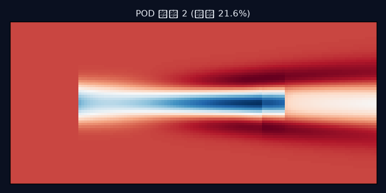
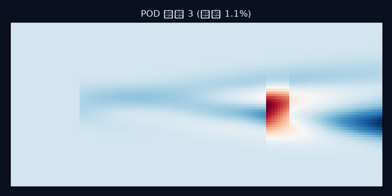

风电场偏航优化
孙承泽 · 可视化模块
首页
尾流
优化
总览
3D曲面
3D体
热力矩阵
求解器
POD
阵列
功率跟踪
Dashboard
🔬 POD 降阶分析
本征正交分解，模态能量分布，流场重构对比，误差定量评估
前 2 个模态即覆盖约 98% 能量 → 对应首页 KPI"2 模态覆盖 98%"。


前 3 阶 POD 模态（流场主结构）。
全模态重构对比：原始 vs POD 重构 vs 误差。POD 为后续 PINN 提供模态基（当前仅用于可视化展示，非 PINN 训练）。